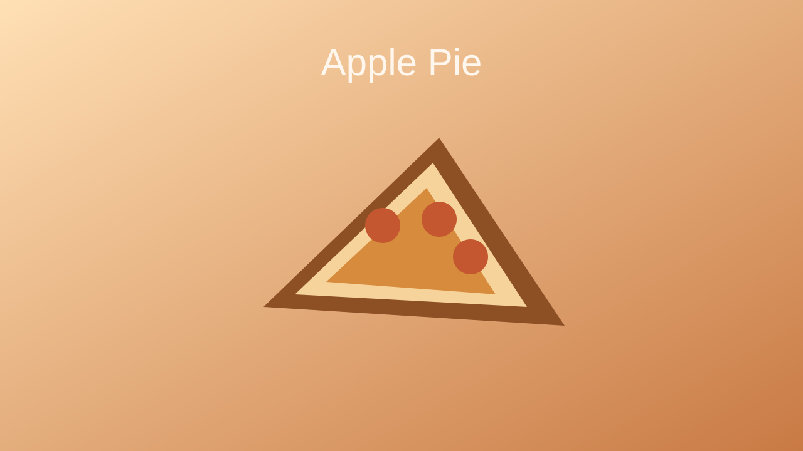

Home
Apple Pie

Description
Apple pie combines tender spiced apples with a flaky crust for a classic dessert that feels both familiar and timeless. The filling becomes glossy and aromatic as it bakes.
Served warm or cool, it is an easy recipe to appreciate for both everyday meals and special occasions.
Ingredients
- Pie crusts
- Apples
- Sugar
- Brown sugar
- Cinnamon
- Nutmeg
- Butter
- Lemon juice
- Cornstarch
Steps
- Prepare the pie crust and chill it while making the filling.
- Peel, core, and slice the apples, then toss them with the sugars, spices, lemon juice, and cornstarch.
- Fit one crust into a pie dish and add the apple filling.
- Dot the filling with butter and cover with the top crust.
- Vent the crust, bake until the filling is bubbling, and cool before slicing.